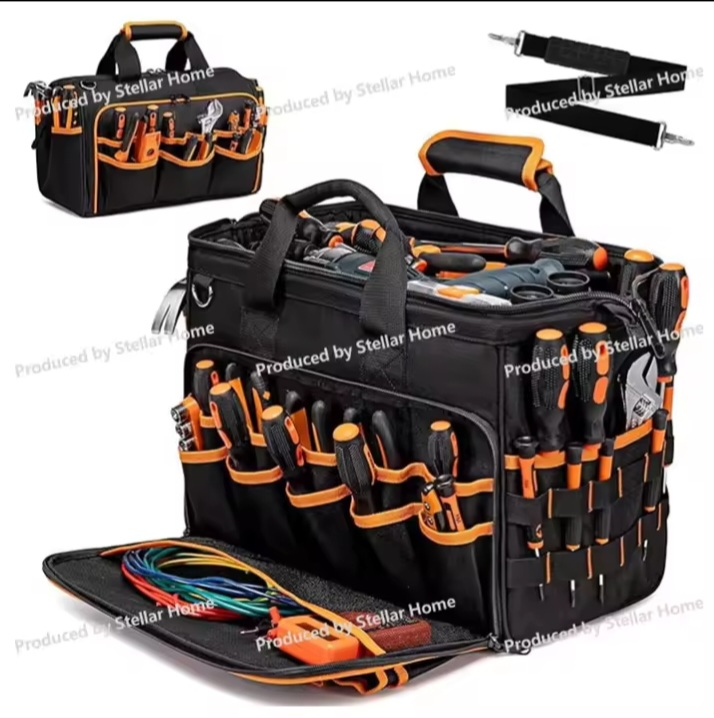

Products, Digital Guides & Sourcing Strategy
Practical Frameworks, Digital Creator Resources, and Import Logistics for Papua New Guinea
Featured Digital Guides & Storefronts
Explore our complete library of downloadable business templates, guides, and creator toolkits.
How to Start Your Catering Business Guide
Step-by-step framework for menu planning, costing, and launching a professional catering service.
Get Guide (US$25)100 AI Prompts to Create Videos in Minutes
Accelerate your short-form and long-form video production across TikTok, YouTube, and Facebook.
Get Prompts (US$3)Free Guide for Pancake Business
An accessible entry-level blueprint introducing recipe math, basic operations, and profit margins.
Get Free Guide (US$0)$10,000 Pancake Empire Blueprint
Advanced scaling strategies, automated workflows, and scaling guides to build a high-revenue food business.
Get Blueprint (US$47)Recommended Field Gear & Tools
Top-rated tools and gadgets hand-picked from global suppliers for trade and maintenance work.
Recommended Field Tool: Fluke 325
High-efficiency digital true RMS clamp meter and testing hardware sourced globally for professional electrical trade use.
View on AliExpress
Professional Multi-Pocket Tool Bag
Rugged, heavy-duty storage bag designed with specialized tool slots and durable compartments for everyday trade work.
View on AliExpressRunning a successful retail or e-commerce business in Papua New Guinea requires a firm grasp of international supply chains. Whether you are importing consumer electronics into Port Moresby or bringing solar appliances to Lae, understanding landed costs and supplier security is critical to building a sustainable margin.
1. Sourcing Fundamentals & Calculating Landed Cost
A common mistake local entrepreneurs make is setting retail prices based solely on the wholesale supplier price. Ignoring international air freight, customs duties, and local port clearance leads to narrow or negative profit margins.
The Complete Landed Cost Formula:
Landed Cost = Supplier Wholesale Price
+ International Freight & Cargo Insurance
+ PNG Customs Import Duty & Goods and Services Tax (GST)
+ Local Clearance & Transportation Costs
The 3X Pricing Rule for Physical Goods
To insulate your business against unexpected shipping delays, currency fluctuations, or damaged goods during transport, aim to price physical products at 2.5x to 3x your wholesale purchase price. This ensures that after paying freight and operational expenses, you maintain a healthy 30% to 40% net margin.
Managing Freight Weight & Volume
Air freight rates to PNG are calculated based on whichever is higher: actual weight or volumetric weight. For early-stage importers, focusing on small, high-value, lightweight inventory (e.g., mobile phone accessories, portable power tools, and compact wearable tech) maximizes your profit relative to shipping expenses.
2. Overseas Supplier Verification Practices
Protecting your capital when sourcing from international B2B platforms like Alibaba or Made-in-China requires systematic supplier verification.
- Work with Verified Suppliers: Select manufacturers with at least 3+ years of platform history, verified factory audits, and high response rates.
- Always Request Test Samples: Never place a bulk order of 50+ units without first receiving a sample unit via express courier (DHL or FedEx). Use sample testing to inspect product durability, packaging quality, and user manuals.
- Utilize Secure Escrow Payment Systems: Avoid direct wire transfers to personal accounts. Always make payments using platform trade assurance escrow services that hold funds until shipment dispatch is confirmed.
3. Choosing the Right Freight Logistics Routes into PNG
Selecting the optimal logistics channel depends directly on your inventory type and urgency:
Express Air Freight (DHL / FedEx)
Ideal for low-weight, high-margin goods requiring rapid turnover. Delivery times generally range between 5 and 10 business days into main centres like Port Moresby and Lae.
Sea Freight & Consolidated Cargo (LCL / FCL)
For heavy bulk items, furniture, or agricultural machinery, sea freight provides significantly lower cost-per-kilogram rates. However, businesses must account for longer lead times (typically 3 to 6 weeks) and factor local port handling fees into their inventory planning.
📦 Need Assistance Sourcing Products for PNG?
Connect directly with our team via WhatsApp for advice on supplier vetting, sample testing, and organizing freight logistics into Papua New Guinea.
💬 Chat via WhatsApp